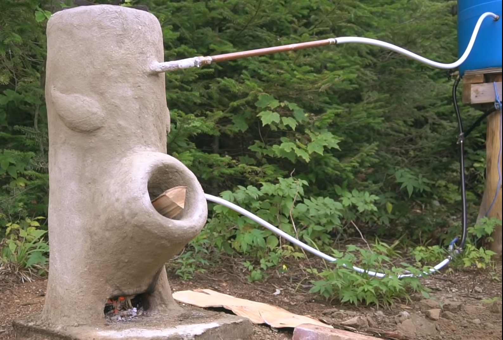

I'm thinking you could make this with some decent clay and a log that is shaped with a y coming off one side. I would try covering the whole log (except for the ends) in clay and carving out a small window in the bottom. Let the clay dry then build a small fire on top and slowly let it burn out the log. It may crack, but I will need to investigate further. This particular design embeds a copper coil in the clay to heat water. If you have a water source about 2 feet above the stove, it will circulate water through the pipes and keep the water hot. It will heat 55 gallons in 4-5 hours.